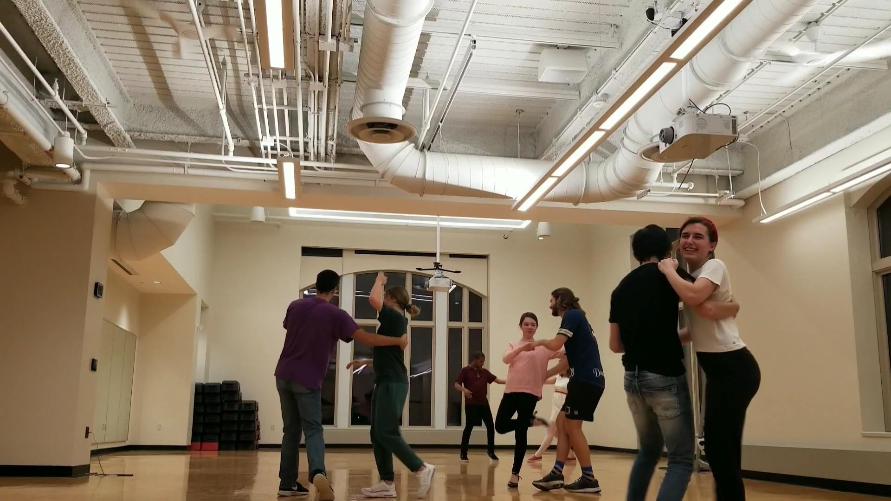
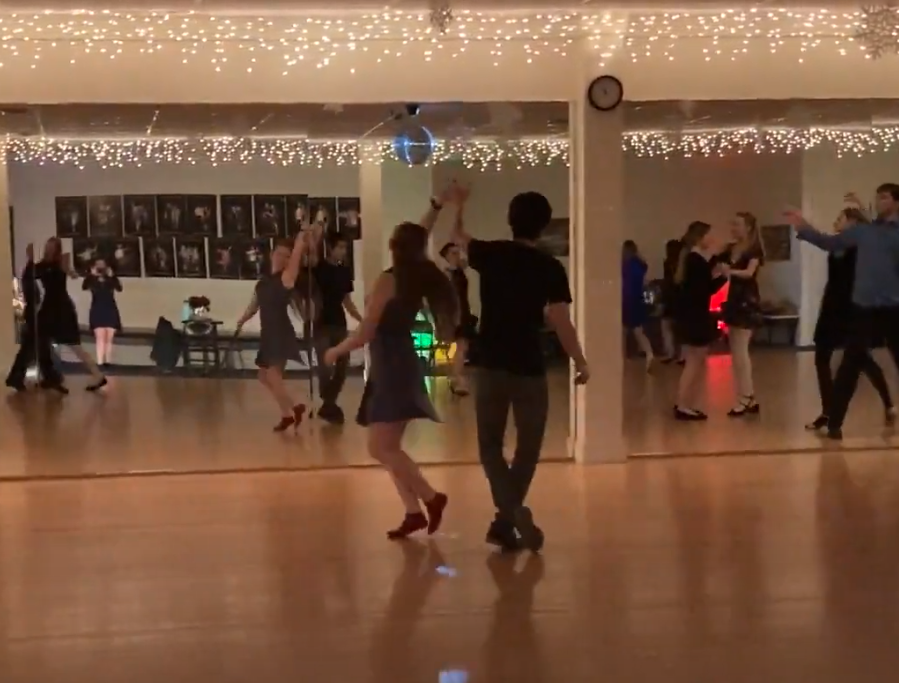
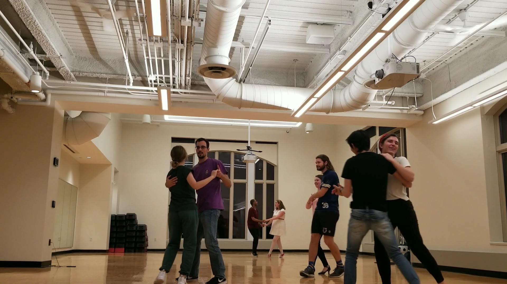
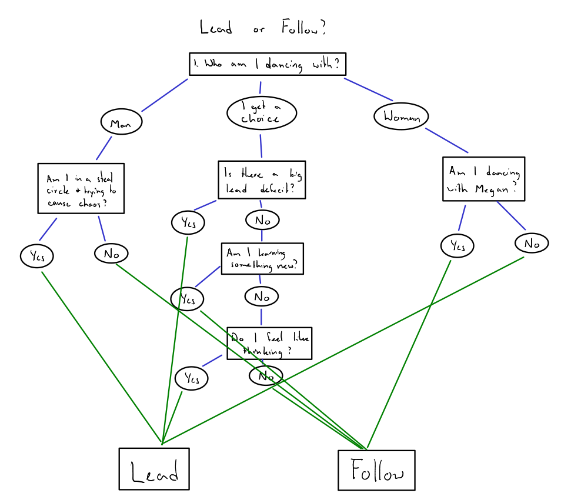
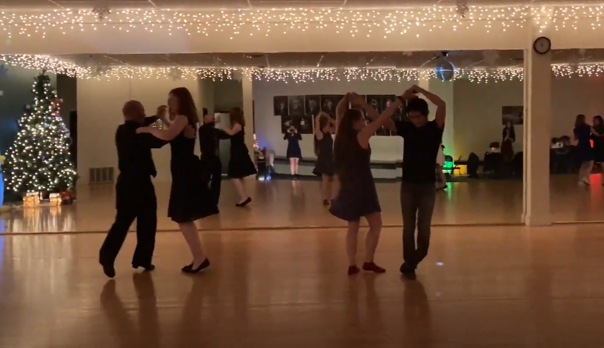

This semester, I joined the Notre Dame Swing Club and I've hed the opportunity to learn several new types of dances. I've danced ballet, tap, and
jazz for close to 15 years at this point but I had next to no experience with any kind of partner dancing before joining swing club. I've really
enjoyed learning east coast swing, lindy hop, charleston, and blues (while also touching west coast and several ballroom dances).
Last week, while I was dancing with Bryce, he asked me whether I prefer leading or following.
I think there's a lot of benefits to learning both.

First of all, learning both allows for more flexibility if there is an imbalance in the number of leads and follows. It's fairly common in our
club to have a shortage of leads, so knowing how to lead gives me more opportunities to dance. It also helps out the entire group because it lets
everyone dance more without putting too much pressure on the leads to wear themselves out dancing with every follow.


As to which one I prefer, I made a silly diagram of how I think about it.

1. If there's a big shortage of leads, I usually like to lead.
2. If the balance of leads and follows in the room is almost equal, I usually like to follow.
3. If it's a song that I know really well such as Feeling Good, I usually like to lead.
4. If I'm dancing with someone who has more experience leading, I usually like to follow.
5. If I don't want to think, I usually like to follow.
6. If you hold out your hand for whoever wants to take it, I like to lead so that I can dance with the other person and leave you out.
7. If there's a steal circle, I sometimes like to make things more confusing and lead.
8. If I'm learning something new for the first time, I usually like to follow.

I know the quality of this post is pretty bad, but if I keep waiting to make something aamazing, I'll never post anything. I have to
start somewhere, so I'm starting here.